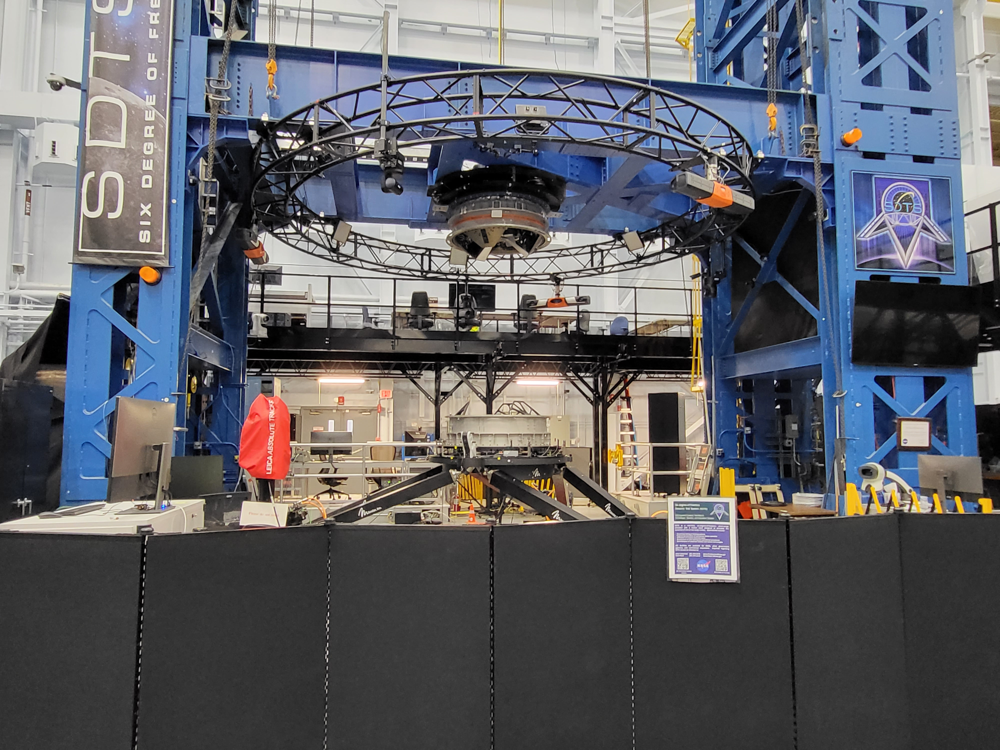
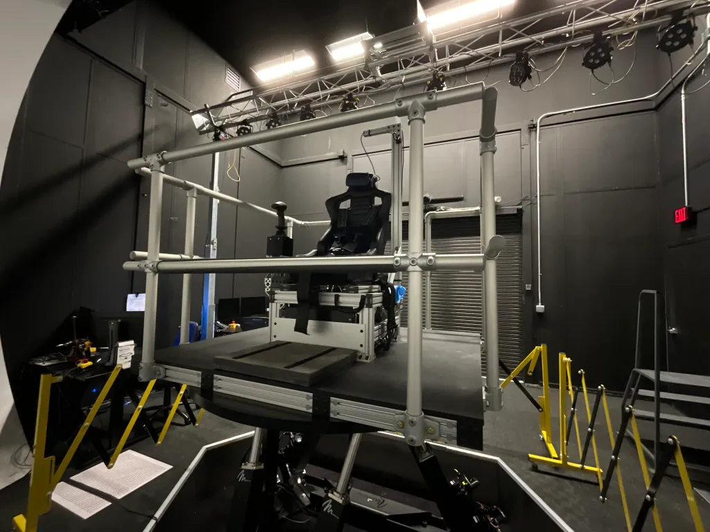

NASA EXPERIENCE
Supported mechanical design, testing, and control system analysis for NASA’s Six Degrees of Freedom Dynamic Test System (SDTS), used to certify spacecraft docking systems.
Supported mechanical design, testing, and control system analysis for NASA’s Six Degrees of Freedom Dynamic Test System (SDTS), used to certify spacecraft docking systems.

The SDTS is a robotic Stewart platform used to simulate spacecraft docking in six degrees of freedom.
It integrates motion systems, force sensors, and optical tracking technologies to evaluate docking performance under realistic conditions.
Designed and improved mechanical systems supporting measurement accuracy, structural integrity, and system integration.


Reduced height and interference risk through inverted design.

Replaced zip ties with custom-designed mounting solutions.

Improved structural stability with increased attachment points.

Supported SpaceX and JAXA docking tests, operating systems and assisting real-time execution.

Designed tools for ATI load sensor calibration, improving usability and precision.
Supported installation and removal of spacecraft hardware and test articles.

Designed and fabricated safety and storage upgrades for the test facility.

Optimized floor layouts and CAD models for astronaut training simulators.

Performed system identification, modeling, and control analysis using MATLAB and Simulink.